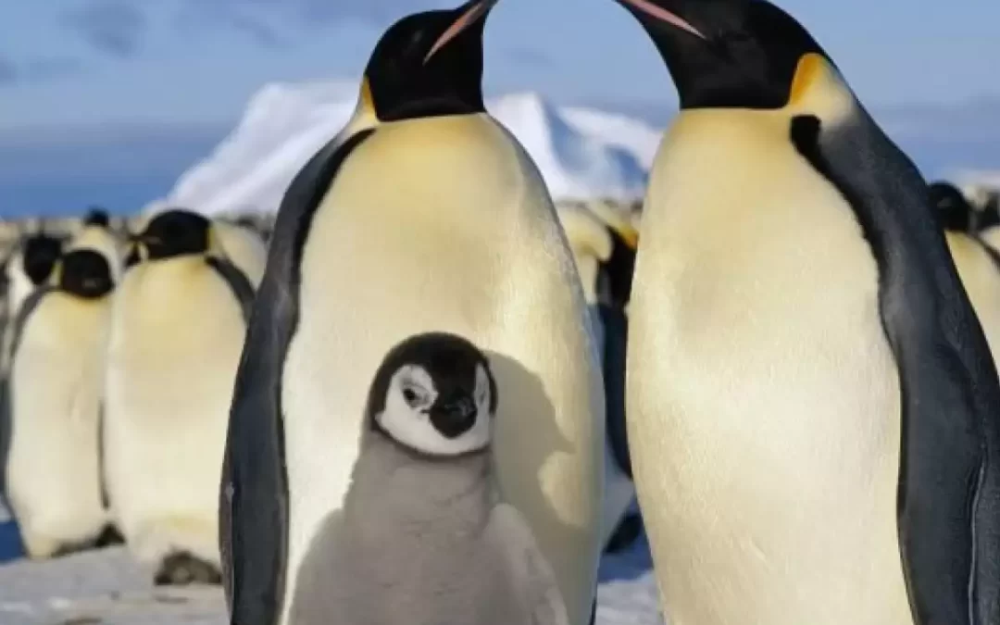
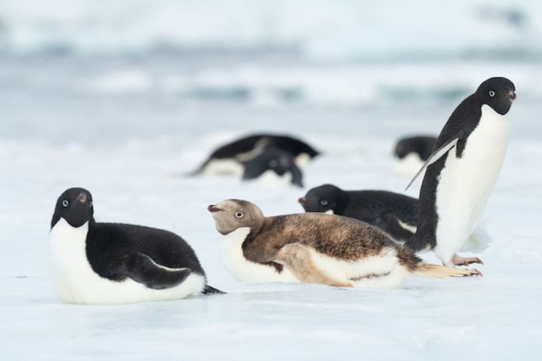
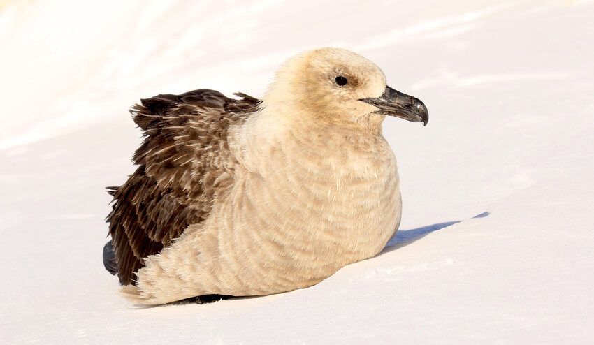
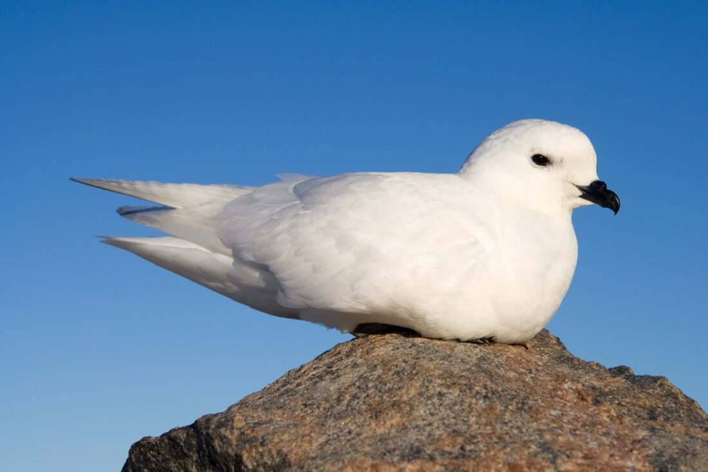
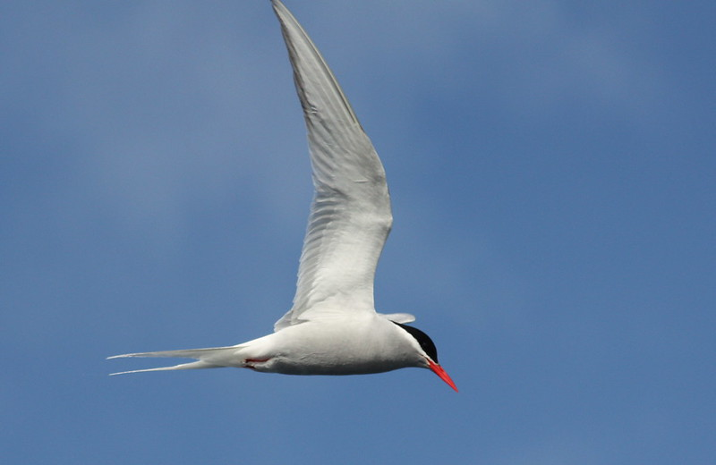

Антарктида
|  | Императорски пингвин | |
| Императорски пингвин е най-големият вид пингвин и една от най-забележителните птици, които обитават Антарктида. Императорските пингвини се хранят основно с риба, калмари и други морски същества. Те ловуват под водата и могат да се гмуркат на дълбочина до 500 метра, като остават под водата до 20 минути. Императорският пингвин е не само интересен поради своята физика и поведение, но и важен индикатор за здравето на околната среда в Антарктика. | ||
{kind=link}
| Аделиев пингвин |  | |
| Аделиев пингвин е един от най-разпространените видове пингвини в Антарктида. Той е малък и много социален, и е известен със своето уникално поведение и адаптации към суровите условия на ледовете в региона. Аделиевите пингвини са изключително социални и живеят в големи колонии, които могат да набират хиляди индивиди. Тези колонии се събират по време на размножаване, когато пингвините се събират в огромни тълпи на ледовете. | ||
{kind=link}
|  | Южен полярен скуа | |
| Южен полярен скуа е голяма морска птица, която обитава Антарктика и субантарктическите острови. Той е известен със своето агресивно поведение и предпочита да се храни чрез плячкосване, като отнема храна от други птици, включително пингвини и морски птици. Понякога се нарича „крадец на небето“ заради агресивното си поведение, когато отнема храна от други птици. Южният полярен скуа е един от малкото видове, които се намират в почти всяка част на Антарктида по време на размножителния сезон. | ||
{kind=link}
| Снежен буревестник |  | |
| Снежен буревестник е вид морска птица, която обитава Антарктика и прилежащите й острови. Той е известен със своето изключително издържливо поведение в суровите условия на региона, както и със своето уникално местообитание и начин на живот. Снежният буревестник е известен със своето упорито поведение и неуморни полети в сурови климатични условия. Понякога се нарича „морски скитник“ заради способността си да прекарва дълги периоди в движение, без да спира да се приземява. | ||
{kind=link}
|  | Антарктическа рибарка | |
| Антарктическа рибарка, известна също като "снежна рибарка", е морска птица, която обитава Антарктида и прилежащите субантарктически острови. Тя е част от семейство Stercorariidae и е тясно свързана с буревестниците и други морски хищници. Антарктическата рибарка е перфектно адаптирана към екстремно студените условия на Антарктика. Тя има специални пера, които осигуряват отлична изолация и защита от суровите ветрове и студ. Антарктическата рибарка е една от малкото птици, които са способни да живеят в такъв суров и студен климат, и е известна със своята силна навигация и дълги миграции. Тя играе важна роля в антарктическата екосистема, като хищник, който контролира популациите на морски организми. | ||
{kind=link}